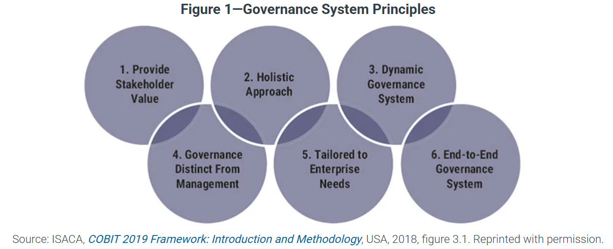
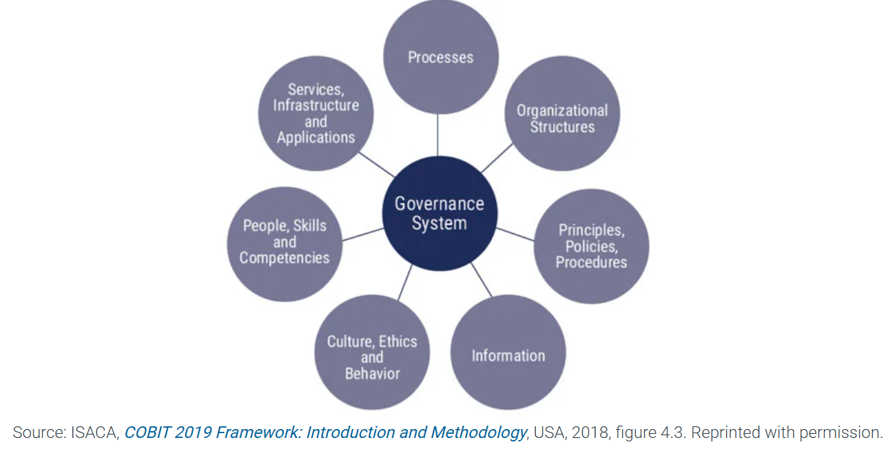

This graphic helps to provide an overview of how IT governance can be structured and how the various frameworks and standards can be structured.
Strategic Alignment
Risk Management & Security
Regulatory Compliance
Performance Optimization & Efficiency
Accountability & Transparency
Innovation & Competitive Advantage
Not specifically geared toward IT, but framework can be applied for monitoring and assessment
History
Private sector initiative to investigate fraud scandals in the 1970's and 1980's. Curr
Contol Environments
Refers to the overall culture of internal controls and established from the top down.
Risk Assessment
The need for periodic risk assessments to identify relevant risk from achieving objectives.
Control Activities
Processess, Procedures, Actions and Communications to mitgate risk
Information & Communication
Timely distribution of information and communciation to stakeholders so that responsibilities can be carried out.
Monitoring Activities
Monitoring, measuring the internal control system to ensure that each of the five controls is present and operating effectively.
Recent updates
March 2023 released Internal Controls Over Sustainability Reporting (ICSR), Updated to focus on Environmental, social and sustainability
COSO Enterprise Risk Management (ERM) is a framework that helps organizations identify, assess, and manage risks to achieve strategic objectives and improve decision-making. It integrates risk management into business processes through key components such as governance, strategy, performance, and information to enhance resilience and value creation.
6 Principles that guide the work of COBIT Framework
COBIT Components of a Governance System - These components work together to align IT with business goals, manage risks, and optimize resources effectively.
Often used in auditing, these frameworks help provide a structure of continual improvement and assessment.
Use of BlockChain Technology
Governance Structure
Strategic Decision Making